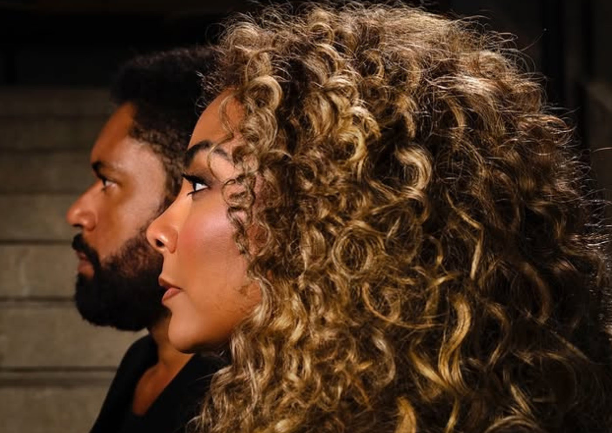

TINA – Tina Turner: Musical da Rainha do Rock chega ao Brasil em 2026

Superprodução indicada a 12 Tony Awards abre vendas para temporada no Teatro Santander a partir de 26 de fevereiro
A Lorenzetti, líder nacional em duchas, chuveiros elétricos e aquecedores de água a gás, anuncia seu patrocínio master ao fenômeno internacional “TINA – Tina Turner, o musical”, espetáculo inspirado na vida da icônica artista e indicado a 12 Tony Awards, incluindo Melhor Musical. A montagem brasileira estreia em 26 de fevereiro de 2026, no Teatro Santander, em São Paulo, onde cumpre temporada até 12 de julho, em celebração aos 10 anos do teatro.
Os ingressos já estão disponíveis pelo site Sympla (sympla.com.br) e na bilheteria oficial do Teatro Santander.
Um fenômeno mundial que chega ao Brasil
Desenvolvido com a participação direta da própria Tina Turner, o musical já emocionou o público em mais de dez países desde sua estreia mundial, em Londres, em 2018. Com produções de sucesso no West End, na Broadway, na Alemanha, Espanha, Holanda, Austrália e na América do Norte, a obra finalmente chega ao Brasil em montagem da IMM e de Stephanie Mayorkis, em colaboração especial com Stage Entertainment, Tali Pelman e Tina Turner estate.
Na versão nacional, Analu Pimenta dará vida à lendária cantora, enquanto César Mello será Ike Turner, figura central nos primeiros anos da carreira de Tina. A trilha sonora reúne sucessos eternos como “The Best”, “What’s Love Got To Do With It”, “Private Dancer” e “Proud Mary”, em uma celebração eletrizante da força e do legado da Rainha do Rock.
Um espetáculo sobre poder, superação e legado
Para Paulo Galina, gerente de marketing da Lorenzetti, apoiar a produção é reforçar o compromisso da empresa com a cultura, a arte e o talento brasileiro:
“Tina Turner é um exemplo de empoderamento feminino e um símbolo de força e superação — valores que fazem parte da trajetória da Lorenzetti. Apoiar esse espetáculo é celebrar histórias inspiradoras que transcendem gerações.”
Dirigido por Phyllida Lloyd e escrito pela vencedora do Olivier Award e do Pulitzer Katori Hall, ao lado de Frank Ketelaar e Kees Prins, o musical conta ainda com nomes célebres da cena internacional:
Anthony van Laast (coreografia)
Mark Thompson (cenário e figurinos)
Nicholas Skilbeck (supervisão musical)
Bruno Poet (iluminação)
A versão brasileira busca manter a grandiosidade da obra original, com alto padrão artístico e técnico.
SERVIÇO – TINA – TINA TURNER, O MUSICAL
Estreia: 26 de fevereiro de 2026 Temporada: até 12 de julho de 2026 Dias e horários: Quartas a domingos (consultar horários atualizados no site oficial)
Local: Teatro Santander – Complexo JK Iguatemi Av. Pres. Juscelino Kubitschek, 2041 – Itaim Bibi, São Paulo – SP
Classificação etária: Livre (Menores de 12 anos somente acompanhados dos pais ou responsáveis)
Ingressos
Online (com taxa): www.sympla.com.br
Bilheteria física (sem taxa): Teatro Santander Horário: diariamente, das 12h às 18h (em dias de espetáculo, até o início da sessão)